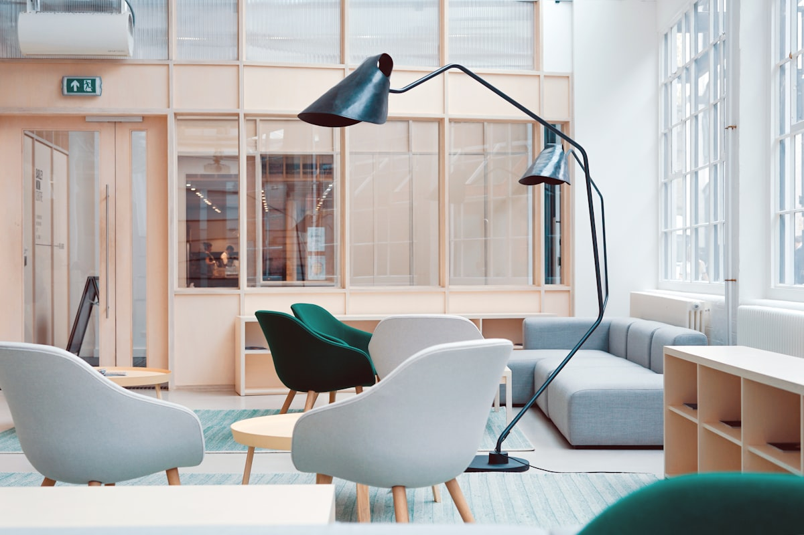

Workspace audits
We review traffic flow, light quality, acoustics, and daily team routines before proposing changes.
Biophilic workplace consulting
Cedar & Bloom helps independent teams design welcoming workspaces with healthier light, thoughtful planting, and practical layouts.
Plan a consultationWhat we do
Every recommendation is designed around how your team actually works, not around a showroom fantasy.
We review traffic flow, light quality, acoustics, and daily team routines before proposing changes.
We choose resilient plants, containers, and care schedules that fit your office conditions.
We create zones for focus, collaboration, breaks, and client visits without forcing a full renovation.

Designed for teams
We combine practical operations research with inviting design. That means clear wayfinding, durable material choices, easy plant care, and meeting zones that feel natural rather than improvised.
About us
Founded in 2021, Cedar & Bloom partners with studios, clinics, and growing office teams that want spaces to feel more human. We document every recommendation, explain maintenance needs clearly, and leave teams with a plan they can keep using long after installation day.